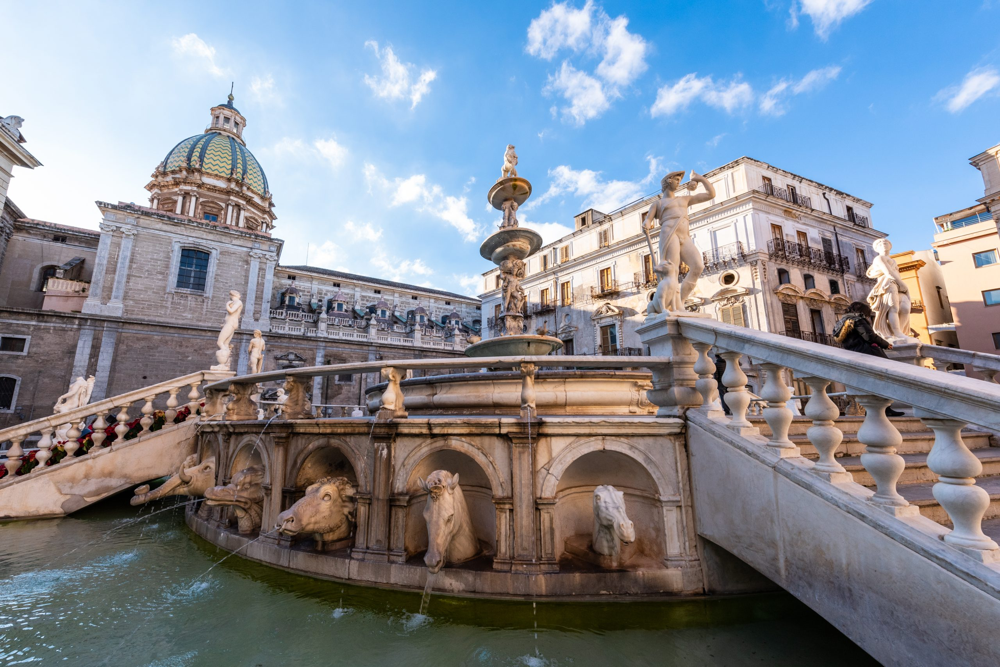
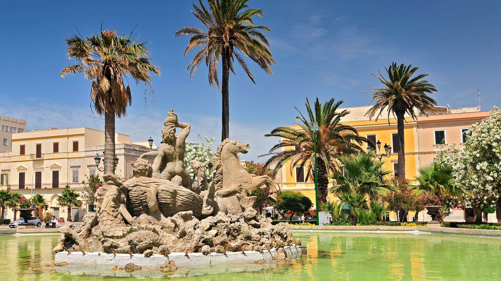
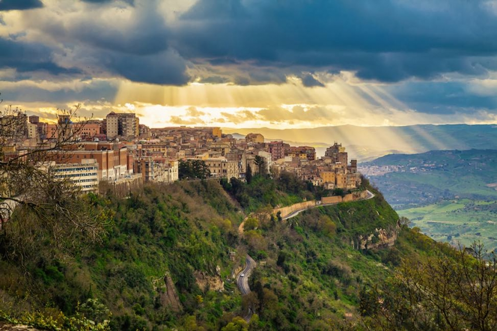
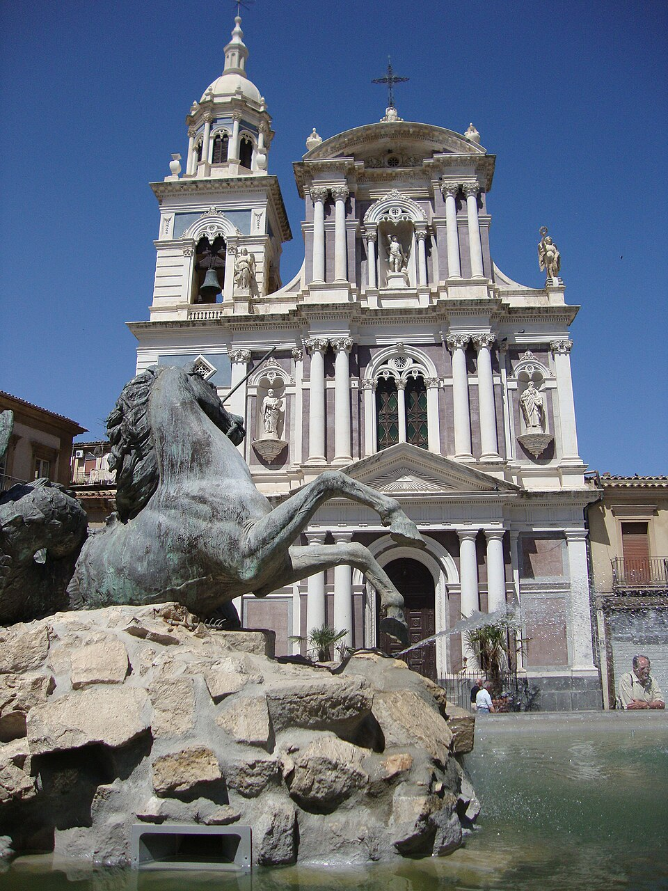

Le piazze siciliane non sono semplici vuoti urbani, ma complessi organismi architettonici nati per stupire. Visitarle significa attraversare secoli di stratificazioni, dove la pietra diventa narrazione. La Sicilia non cancella il passato, lo ingloba. Così, non è insolito vedere colonne greche millenarie incastonate in facciate barocche, o fontane dedicate a miti classici che convivono con bassolati medievali e arredi moderni. Le piazze non sono un semplice vuoto tra gli edifici, né un mero punto di passaggio; sono a tutti gli effetti il "grande specchio" della comunità. Da Palermo a Ortigia, queste distese di pietra non sono scenografiche statiche, ma organismi pulsanti che riflettono l'identità, la storia e la luce stessa dell'isola. Se le strade sono le arterie della città, la piazza ne è il cuore vitale, dove ogni elemento architettonico dialoga con il vissuto di chi la attraversa.





